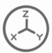
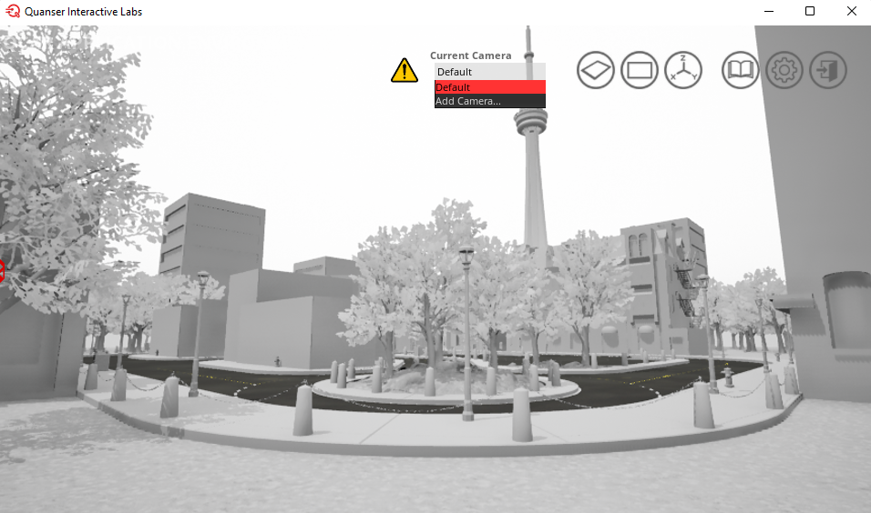

User Interface
Although the Virtual Self Driving Car Studio was not meant to be used primary through the user interface (UI) (See our Design Philosophy for more information), there are several UI graphical features that are documented below. This page goes through the basic Keyboard Controls and graphical features available in the interface of the Self Driving Car Studio Workspaces.
Keyboard Controls
The following keyboard controls are how you move the default camera around the SDCS workspace.

Coordinate Helper (Determining Locations)
In the top right corner of the workspace, click on the coordinate button . This function helps determine specific locations of interest which can aid in determining where to spawn objects or place cameras. If you toggle the button to enable click placement, it will disable camera motion while you click to place a point in the workspace. The location readout will now display the coordinates of the dropped point in your workspace. You can copy this location by clicking on the copy button located to the right of the location readout.
{kind=link}
Controlling Cameras in the GUI
Cameras in the QCar Studio enable the ability to see multiple angles of the workspace and switch between those views easily. There are many potential applications for cameras, and this section talks about how to initialize and use these cameras effectively.
Warning
Only 65,535 new deviceIDs can be created
Controlling Free/Open World Flying Cameras in the GUI
By default, when a workspace is opened, the default camera is the initial view of the workspace that will be shown.
Default QCar Workspace View in Quanser Interactive Labs
Adding Cameras in the GUI
In order to add a new camera to the scene click the drop down under Current Camera and click on Add a Camera. This will add a new camera to the scene and open a window to display the camera options.
Camera Options
There are several different camera options that can be changed.
Camera Location & Rotation - The camera will initially appear in the location the current scene is showing, however this camera can be moved by using the basic Keyboard Controls to move to a different location.
Field of view (FOV) - FOV can be changed by sliding the slider or inputting a specific value.
If the Cinematic camera option is toggled to on, then you can also change the aperture and the focal distance using their respective sliders or inputting specific values.
Lock Camera Location - To fix a camera in a specific location, navigate to that location and simply toggle the Lock camera location option.
{kind=link}
Tip
If you close the window on purpose or by accident, you can find your newly added camera under the drop down menu and can open it again by clicking on the triple bar next to the drop down menu.
You can add as many cameras as you want, as they don’t consume resources until you switch to them.
You can also add a camera through creating a python script and checking out the Cameras object documentation.